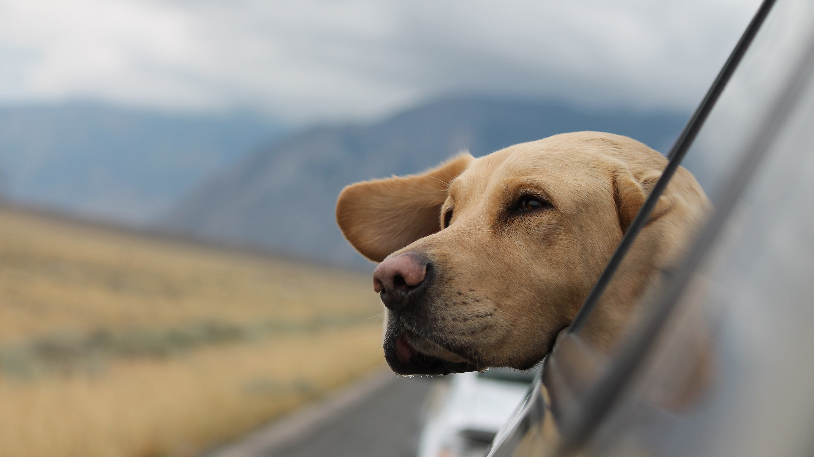

Why use us: As a pet store that has been in business for nine years, we have professional staff to serve you and your pet. Each employee will receive more than one week of professional training before they can formally work. We always believe that only professional personnel can better serve our customers. And, we are located in downtown, so you can easily reach without a car. 7*24 service hotline solves all your problems in time. Choose us, only professional is the one who knows you best.
